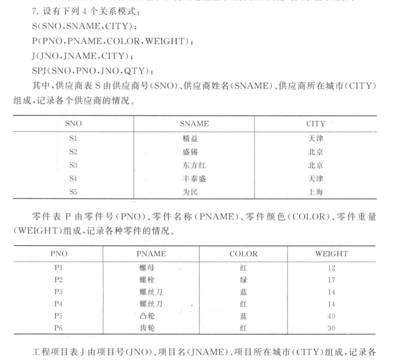
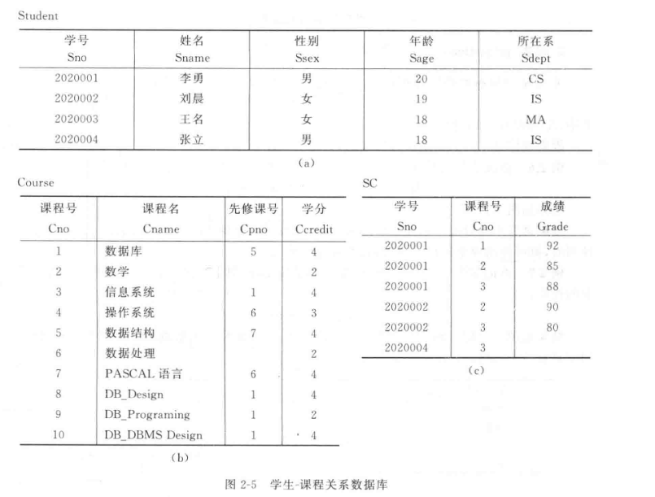

第六以及第七周作业¶
第六周¶
Question
完整性约束条件可分为哪几类?
- 声明性约束
- 数值取值要求
- 域约束
- 实体完整性
- 参照完整性
- 一般约束
- 过程性约束
- 触发器
Question
DBMS的完整性控制机制应具有哪些功能?
- 提供定义完整性约束条件的机制 通过DDL 规定主键 外键 通过CHECK ASSERTION 定义约束
- 提供完整性检查的方法
DBMS能够对用户的增 删 改操作进行检测 拦截会破坏一致性的指令
- 进行违约处理 能对完整性检查的结果做出反应
Question
RDBMS在实现参照完整性时需要考虑哪些方面?
同上者有一定类似
- 提供基础的定义机制 能够支持定义主键与外键
- 准确监控引发冲突的各种操作
- 提供多样化的违约处理策略
- 支持细粒度的事件绑定


Q4
设有四个关系模式:
S(SNO, SNAME, CITY);
P(PNO, PNAME, COLOR, WEIGHT);
J(JNO, JNAME, CITY);
SPJ(SNO, PNO, JNO, QTY);
其中，供应商表S有供应商号(SNO)、供应商姓名(SNAME)、供应商所在城市(CITY)组成，记录各个供应商的情况;
零件表P由零件号(PNO)、零件名称(PNAME)、零件颜色(COLOR)、零件重量(WEIGHT)组成，记录各种零件的情况;
工程项目表J由项目号(JNO)、项目名(JNAME)、项目所在城市(CITY)组成，记录各个工程项目的情况;
供应情况表SPJ由供应商号(SNO)、零件号(PNO)、项目号(JNO)、供应数量(QTY)组成，记录各供应商供应各种零件给各工程项目的数量。
(这四张表的实例见教材P63-64页)请用SQL完成下列操作:
1)在S表中插入一条供应商信息:(S6，华天，深圳)。
2)把全部红色零件的颜色改为粉红色。
3)将S1供应给J1的零件P1改为由S2供给。
4)删除全部蓝色零件及相应的SPJ记录。
在S表中插入一条供应商信息:(S6，华天，深圳)
直接进行INSERT吧
INSERT INTO S (SNO, SNAME, CITY)
VALUES ('S6', '华天', '深圳');
把全部红色零件的颜色改为粉红色
考虑UPDATE
UPDATE P
SET COLOR = 'PINK'
WHERE COLOR = 'RED'
将S1供应给J1的零件P1改为由S2供给
对象是零件 要改的是供应商号SNO
UPDATE SPJ
SET SNO = 'S2'
WHERE SNO = 'S1' AND JNO = 'J1'
删除全部蓝色零件及相应的SPJ记录。
蓝色要查P表 删SPJ表
DELETE
FROM SPJ
WHERE PNO IN (
SELECT PNO
FROM P
WHERE COLOR = 'BLUE'
)
DELETE
FROM P
WHERE COLOR = 'BULE'
Q5
假设有下面两个关系模式: 职工(职工号，姓名，年龄，职务，工资，部门号)，其中职工号为主码; 部门(部门号，名称，经理名，电话)，其中部门号为主码。 请用SQL定义这两个关系模式，要求在模式中完成以下完整性约束条件的定义。 (1)定义每个模式的主码。 (2)定义参照完整性 (3)定义职工年龄不得超过60岁
建表
CREATE TABLE 部门 (
部门号 CHAR(10) PRIMARY KEY, -- 主码
名称 VARCHAR(50),
经理名 VARCHAR(50),
电话 VARCHAR(20)
);
CREATE TABLE 职工 (
职工号 CHAR(10) PRIMARY KEY, -- 主码
姓名 VARCHAR(50),
年龄 INT CHECK(年龄 <= 60), -- 年龄约束
职务 VARCHAR(50),
工资 DECIMAL(10,2),
部门号 CHAR(10),
FOREIGN KEY (部门号) REFERENCES 部门(部门号) -- 参照完整性
);
第七周¶

对学生-课程数据库(具体内容见教材P47的图2-5)，编写存储过程，完成下面功能。 1)统计离散数学的成绩分布情况，即按照各分数段统计人数。 2)统计任意一门课程的平均成绩。 3)将学生选课成绩从百分制改为等级制(即A、B、C、D、E).
统计离散数学的成绩分布情况，即按照各分数段统计人数
CREATE OR REPLACE PROCEDURE Stat_Discrete_Math_Grades
AS
va INT := 0;
vb INT := 0;
vc INT := 0;
vd INT := 0;
ve INT := 0;
BEGIN
SELECT
NVL(SUM(CASE WHEN Grade >= 90 THEN 1 ELSE 0 END), 0),
NVL(SUM(CASE WHEN Grade >= 80 AND Grade < 90 THEN 1 ELSE 0 END), 0),
NVL(SUM(CASE WHEN Grade >= 70 AND Grade < 80 THEN 1 ELSE 0 END), 0),
NVL(SUM(CASE WHEN Grade >= 60 AND Grade < 70 THEN 1 ELSE 0 END), 0),
NVL(SUM(CASE WHEN Grade < 60 THEN 1 ELSE 0 END), 0),
INTO va, vb, vc, vd, ve
FROM SC
JOIN Course ON SC.Cno = Course.Cno
WHERE Course.Cname = '离散数学'
DBMS_OUTPUT.PUT_LINE('90-100分 (A): ' || v_a || ' 人');
DBMS_OUTPUT.PUT_LINE('80-89分 (B): ' || v_b || ' 人');
DBMS_OUTPUT.PUT_LINE('70-79分 (C): ' || v_c || ' 人');
DBMS_OUTPUT.PUT_LINE('60-69分 (D): ' || v_d || ' 人');
DBMS_OUTPUT.PUT_LINE('60分以下 (E): ' || v_e || ' 人');
END;
统计任意一门课程的平均成绩
CREATE OR REPLACE PROCEDURE Get_Avg_Grade (
p_canme IN Course.Cname%TYPE -- 输入参数
)
AS
v_avg_grade NUMBER(5,2);
BEGIN
SELECT AVG(Grade) INTO v_avg_grade
FROM SC
JOIN Course ON SC.Cno = Course.Cno
WHERE Course.name = p_cname;
IF v_avg_grade IS NOT NULL THEN
DBMS_OUTPUT.PUT_LINE('课程 [' || p_cname || '] 的平均成绩为: ' || v_avg_grade);
ELSE
DBMS_OUTPUT.PUT_LINE('课程 [' || p_cname || '] 暂无成绩记录。');
END IF;
EXCEPTION
WHEN NO_DATA_FOUND THEN
DBMS_OUTPUT.PUT_LINE('错误：数据库中不存在该课程。');
END;
/
将学生选课成绩从百分制改为等级制
ALTER TABLE SC ADD Grade_Level CHAR(1);
CREATE OR REPLACE PROCEDURE Convert_Grade_To_Level
AS
BEGIN
UPDATE SC
SET Grade_Level = CASE
WHEN Grade >= 90 THEN 'A'
WHEN Grade >= 80 THEN 'B'
WHEN Grade >= 70 THEN 'C'
WHEN Grade >= 60 THEN 'D'
WHEN Grade < 60 THEN 'E'
ELSE NULL
END;
COMMIT;
DBMS_OUTPUT.PUT_LINE('Done');
END;
/